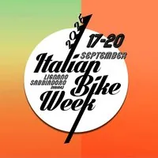

da gio 17 set a dom 20 set
Italian Bike Week 2026
Italian Bike Week 2026 a Lignano Sabbiadoro | 17–20 maggio: moto, test ride Off Road e Adventure, musica, cultura e divertimento nell’Area Luna Park!
 Indicazioni
Indicazioni
- Costi e prenotazioni
- Costo non indicato · Prenotazione non indicata
- Programma
- Programma da verificare. Apri la fonte ufficiale per orari e possibili aggiornamenti.
- In caso di maltempo
- Nessuna indicazione specifica pubblicata.
- Note
- Acquisito automaticamente dalla fonte.
L’EVENTO
Descrizione completa
Anche quest'anno, dopo il successo ottenuto nelle scorse edizioni, torna l' Italian Bike Week dal 17 al 20 settembre 2026, l'evento di chiusura della stagione balneare di Lignano Sabbiadoro, aperta a maggio dalla Biker Fest International.
Un evento rivoluzionario nel panorama che vedrà i maggiori organizzatori di eventi Fuoristrada Italiani e che si prefigge di portare a Lignano Sabbiadoro centinaia di piloti e migliaia di visitatori, incoronandola definitivamente come la " Most Famous European Biker Beach "!
La manifestazione si presenterà all’utenza come un innovativo contenitore di iniziative legate al mondo della mobilità su 2 e 4 ruote (motorizzate, elettriche ed ibride), ma anche musicale, sportivo, sociale, turistico, enogastronomico e culturale. Il format totalmente innovativo (unico nel suo genere in Italia), prevede l’utilizzo di diverse aree di Lignano Sabbiadoro interessate dall’evento e questo permette ai partecipanti di vivere la città nella sua completezza.
La grande novità, rispetto alla Biker Fest, saranno le prove dei veicoli “ Off Road ed Adventure ” che attualmente sono i segmenti di punta del mondo moto nelle classifiche di vendita, i cui nuovi modelli vengono presentati nel mese di agosto e pertanto l’evento sarà il palcoscenico ideale per tutte le Case Moto ufficiali che vi presenzieranno e faranno provare le loro nuove gamme al grande pubblico. Così facendo i nostri ospiti non saranno solamente dei turisti ma dei veri e propri “cittadini contemporanei”.
Info: info@terredimoto.it Web: www.italianbikeweek.net Stand: stand@bikerfest.it Tel: +39 0432.948777 Contatti per la musica: info@greatballsmusic.it
IL PROGRAMMA
Programma e orari
Appuntamenti raccolti dalle fonti elencate. Dove manca un orario, non è ancora disponibile in questa scheda.
Programma pubblicato
- Dal 2026-09-17 al 2026-09-20
INFORMAZIONI UTILI
Prima di partire
- Controllare la fonte prima di partire.
ORGANIZZAZIONE